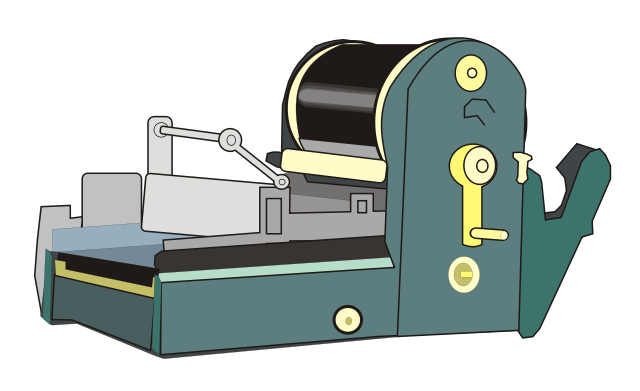

Filter by schema, table, view, function, type, owner
Dumps each database object to its own file
Includes all privileges (even for function) in each file
Regex matching
Full Python class (requires python 3)
TODO ADD COMMAND LINE FOR DEMO HERE
Extensions
Introduced in 9.1
Logically grouped set of database objects
CREATE EXTENSION pg_partman;
Versioned
ALTER EXTENSION pg_partman UPDATE TO '1.8.0';
Update and revert changes predictably
Ensure consistent code across multiple clusters
PG Jobmon
PostgreSQL Extension
Autonomous Functions
Log steps of running functions
Monitor logged functions to ensure completion
If/When they fail, where and why
PG Jobmon
add_job('job name');
add_step(job_id, 'What this step will do');
... do some stuff ... update_step(step_id, 'good_status', 'What this step did successfully');
add_step(job_id, 'What this next step will do');
... do some stuff in a loop ... update_step(step_id, 'good_status', 'update every loop iteration to track progress');
add_step(job_id, 'One last step');
... do just a bit more stuff ... update_step(step_id, 'good_status', 'Job finished ok');
close_job(job_id);
EXCEPTION
WHEN OTHERS THEN update_step(step_id, 'bad_status', 'Uh..oh...: '||coalesce(SQLERRM,'wat'));
fail_job(job_id);
-[ RECORD 1 ]+------------------------------
job_id | 9
step_id | 19
action | Test step 1
start_time | 2012-09-15 00:55:44.501825-04
end_time | 2012-09-15 00:55:44.593389-04
elapsed_time | 0.091564
status | OK
message | Successful Step 1
-[ RECORD 2 ]+------------------------------
job_id | 9
step_id | 20
action | Test step 2
start_time | 2012-09-15 00:55:44.643017-04
end_time | 2012-09-15 00:55:44.659336-04
elapsed_time | 0.016319
status | OK
message | Rows affected: 2
-[ RECORD 3 ]+------------------------------
job_id | 9
step_id | 21
action | Test step 3
start_time | 2012-09-15 00:55:44.692518-04
end_time | 2012-09-15 00:55:44.7087-04
elapsed_time | 0.016182
status | OK
message | Successful Step 3
PG Jobmon
check_job_status();
Make nagios check (command and service configs on my blog)
Shameless plug – http://circonus.com (howto on my blog)
SELECT t.alert_text ||'('||c.alert_text||')' AS alert_status
FROM jobmon.check_job_status() c
JOIN jobmon.job_status_text t ON c.alert_code = t.alert_code;
alert_status
-------------------------------
OK(All jobs run successfully)
alert_status
--------------------------------------------------------------
CRITICAL(KEITH.SOME_OTHER_PROCESS: MISSING - Last run at 2012-09-13 07:17:07.86378-04; KEITH.ANOTHER_PROCESS: MISSING - Last run at 2012-09-13 07:16:30.169683-04;)
alert_status
--------------------------------------------------------------
WARNING(KEITH.SOME_CRITICAL_PROCESS: RUNNING; )
Mimeo
Per-table Replication Extension
“The stencil duplicator or mimeograph machine (often abbreviated to mimeo) is a low-cost printing press that works by forcing ink through a stencil onto paper...Mimeographs were a common technology in printing small quantities, as in office work, classroom materials, and church bulletins.” – Wikipedia
Mimeo
Traditional method: Streaming & Log Shipping Replication (omnipitr)
Logical/Per-table replication
Snapshot
Incremental
Trigger-based (DML)
Quick setup and tear-down
Installed & run from destination database(s)
No superuser required
Column filter / WHERE Condition
Monitor & Audit Trail with PG Jobmon
Types of Replication
Mimeo
Snapshot
The easy way
Whole table replication
Two tables w/ single view
Brief exclusive lock to swap view source
Minimize transactional lock during data migration
Ideal for small or static tables
Faster than DML replay if majority of table changes often
Replicate column changes (new, dropped, type)
No replication if source data has not changed
Table
Single table, no views
Options to handle FK (cascade) and reset sequences
Good for dev database
Types of Replication
Mimeo
Incremental
Control timestamp or serial column
High transaction tables w/ timestamp or ID set every insert
With primary/unique key, can also support updates
DST
Run database in GMT/UTC
Replication does not run
Types of Replication
Mimeo
DML
Replay Inserts, Updates, Deletes
Trigger w/ queue table on source
Doesn't actually replay
Queue table of only primary/unique key values
Distinct on queue table
Delete all matches on destination & re-insert
Supports multiple destinations
Types of Replication
Mimeo
Log Deletes
Same methods as DML but does not replay deletes
Common in data warehousing
Queue table stores entire row if it's deleted
Destination has special column with timestamp of row's deletion
Use Cases
Mimeo
Table audit
Trigger to track all changes to audit table w/ audit_timestamp column
Use incremental replication on audit table to pull to data warehouse.
Time-based partitioning on source audit table to easily drop old data with minimal impact on production.
Database Upgrade
Can connect with dblink to any version that supports it
Setup replication for larger tables to minimize downtime for pg_dump upgrade method.
Automatically updates trigger functions as needed.
Handles object name length limit (63 char)
Constraint exclusion on non-partitioned column(s)
Automated Creation
pg_partman
Python script to partition existing data
Commits after each partition created
Commit in smaller batches with configured wait
Partition live, production tables
Partitioned 74 mil row table by day (30 days of data)
Committed in hourly blocks w/ 5 second wait
Streaming slave never fell more than 100 seconds behind
2-3 second lock on parent was only interruption
Static Partitioning
pg_partman
Readable functions!
CREATE OR REPLACE FUNCTION partman_test.time_static_table_part_trig_func()
RETURNS trigger
LANGUAGE plpgsql
AS $function$
BEGIN
IF TG_OP = 'INSERT' THEN
IF NEW.col3 >= '2013-03-21 00:00:00-04' AND NEW.col3 < '2013-03-22 00:00:00-04' THEN
INSERT INTO partman_test.time_static_table_p2013_03_21 VALUES (NEW.*);
ELSIF NEW.col3 >= '2013-03-20 00:00:00-04' AND NEW.col3 < '2013-03-21 00:00:00-04' THEN
INSERT INTO partman_test.time_static_table_p2013_03_20 VALUES (NEW.*);
ELSIF NEW.col3 >= '2013-03-22 00:00:00-04' AND NEW.col3 < '2013-03-23 00:00:00-04' THEN
INSERT INTO partman_test.time_static_table_p2013_03_22 VALUES (NEW.*);
ELSIF NEW.col3 >= '2013-03-19 00:00:00-04' AND NEW.col3 < '2013-03-20 00:00:00-04' THEN
INSERT INTO partman_test.time_static_table_p2013_03_19 VALUES (NEW.*);
ELSIF NEW.col3 >= '2013-03-23 00:00:00-04' AND NEW.col3 < '2013-03-24 00:00:00-04' THEN
INSERT INTO partman_test.time_static_table_p2013_03_23 VALUES (NEW.*);
ELSE
RETURN NEW;
END IF;
END IF;
RETURN NULL;
END $function$
Dynamic Partitioning
pg_partman
CREATE OR REPLACE FUNCTION partman_test.time_dynamic_table_part_trig_func()
RETURNS trigger
LANGUAGE plpgsql
AS $function$
DECLARE
v_count int;
v_partition_name text;
v_partition_timestamp timestamptz;
v_schemaname text;
v_tablename text;
BEGIN
IF TG_OP = 'INSERT' THEN
v_partition_timestamp := date_trunc('day', NEW.col3);
v_partition_name := 'partman_test.time_dynamic_table_p'|| to_char(v_partition_timestamp, 'YYYY_MM_DD');
v_schemaname := split_part(v_partition_name, '.', 1);
v_tablename := split_part(v_partition_name, '.', 2);
SELECT count(*) INTO v_count FROM pg_tables WHERE schemaname = v_schemaname AND tablename = v_tablename;
IF v_count > 0 THEN
EXECUTE 'INSERT INTO '||v_partition_name||' VALUES($1.*)' USING NEW;
ELSE
RETURN NEW;
END IF;
END IF;
RETURN NULL;
END $function$
Automated Destruction
pg_partman
Configurable retention policy
Time: Drop tables with values older than 3 months
Serial: Drop tables with values less than 1000 minus current max
By default only uninherits
Can drop old tables or only their indexes
Dump out tables for archiving
Undo partitioning
PgTAP
Unit testing for PostgreSQL queries, schema & scripting